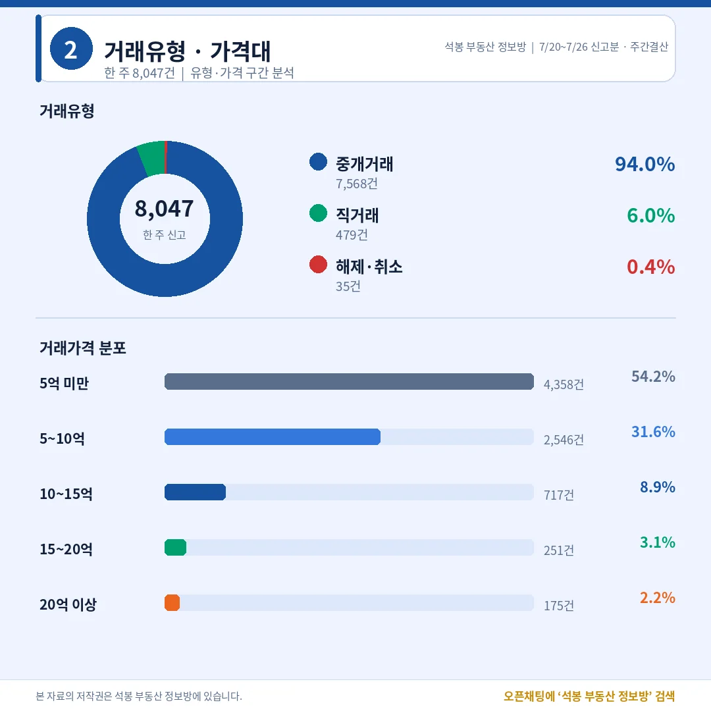
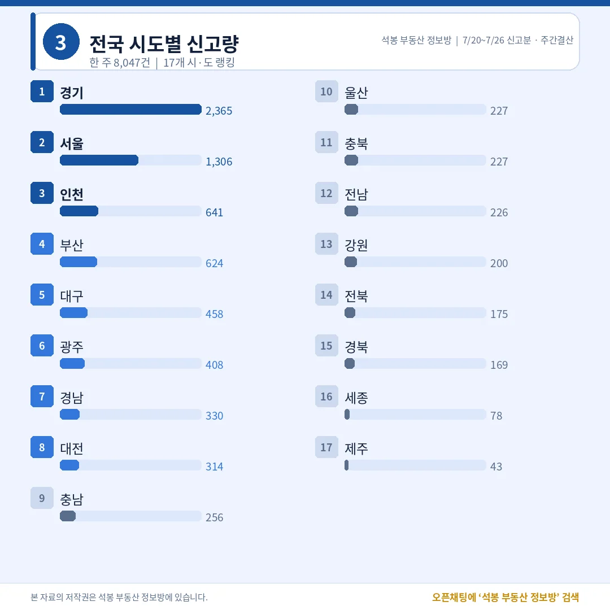
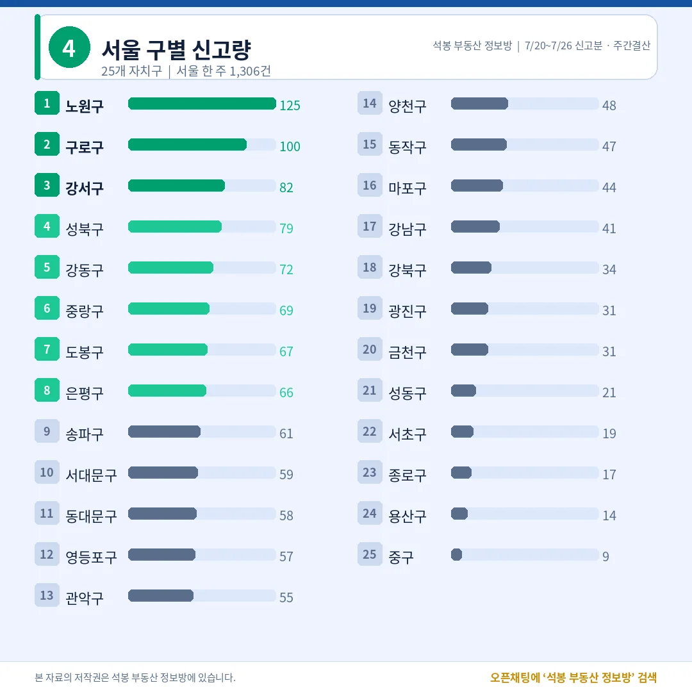
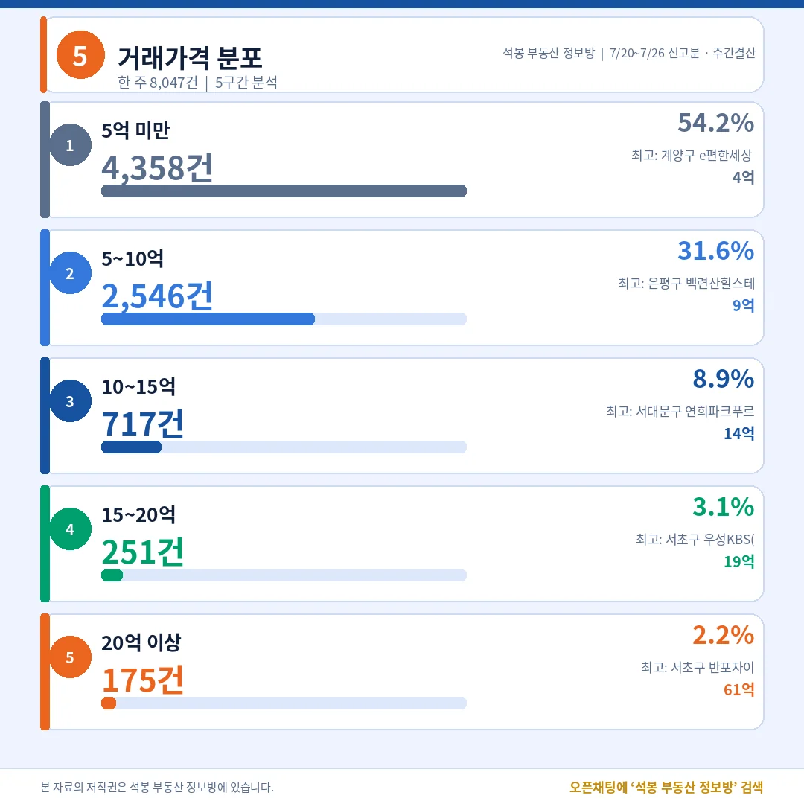
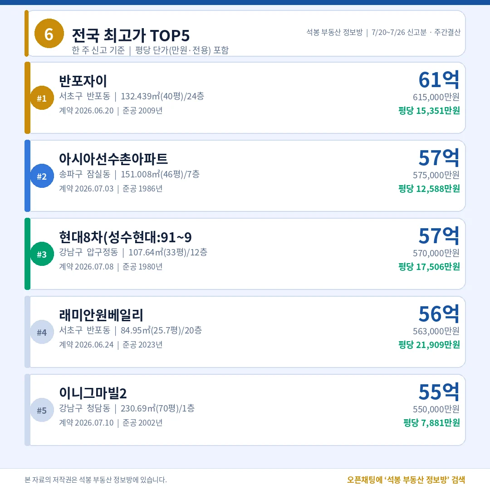
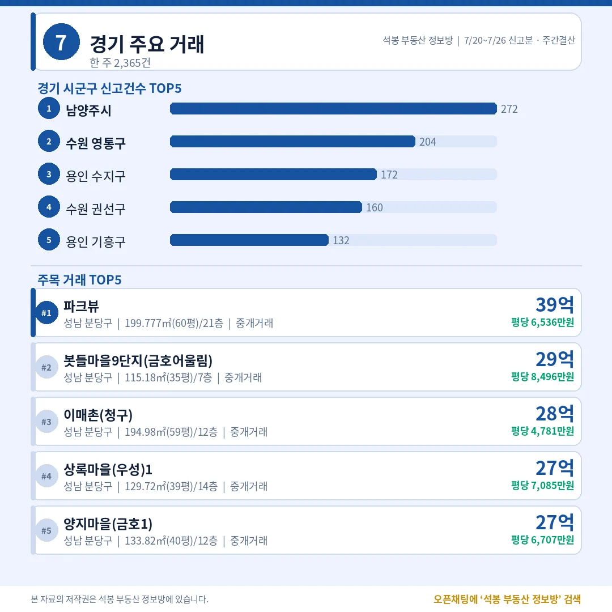
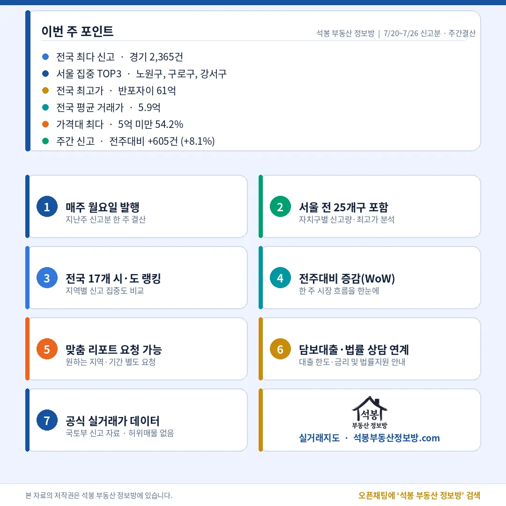

지난주(7월 20일~26일) 전국에서 아파트 8,047건이 실거래로 신고됐습니다. 그 전주 7,442건보다 605건(+8.1%) 늘며 한 주 만에 다시 방향을 위로 틀었습니다. 서울 거래량 1위는 또 노원구(125건)였는데, 이번엔 지지난주 중랑구 같은 기관 일괄매입 왜곡 없이 여러 단지에 골고루 붙은 실수요였습니다. 최고가 상단은 여전히 강남·서초 몫이었고요. 한 주를 숫자로 정리해 드립니다.
단지명을 누르면 그 단지의 실거래 내역과 시세를 바로 볼 수 있습니다. (평당 단가는 전용면적 기준)
지난주 시장 한눈에: 중개 94%, 몸통은 여전히 5억 미만

거래유형·가격대
전체 8,047건 가운데 중개거래가 7,568건(94.0%)으로 대부분이었습니다. 직거래(중개사 없이 당사자끼리 한 거래)는 479건(6.0%), 해제·취소는 35건(0.4%)에 그쳤습니다. 특정 기관이 물량을 한꺼번에 몰아 넣는 벌크 신고 같은 왜곡 요인이 이번 주 상위 지역에는 보이지 않아, 지난주 수치는 시장의 평소 체온에 가깝다고 읽어도 무리가 없습니다.
가격대는 5억 미만이 4,358건(54.2%)으로 절반을 넘겼고, 5~10억이 2,546건(31.6%)으로 뒤를 이었습니다. 열 건 중 여덟 건 넘게 10억 아래에서 거래된 셈입니다. 10~15억은 717건(8.9%), 15~20억 251건(3.1%), 20억 이상은 175건(2.2%)이었습니다. 초고가 거래가 헤드라인을 잡아도 시장의 몸통은 중저가에 있다는 구조가 이번 주에도 그대로 확인됩니다.
여기서부터는 회원에게 보여드립니다
카카오 로그인 3초면 전문을 읽을 수 있습니다. 무료입니다.
회원에게는 지역 시장조사 보고서(약식)도 요청하시면 이메일로 보내드립니다.
이미 회원이면 같은 버튼으로 로그인만 됩니다
전국 어디서 거래됐나: 경기 2,365건, 수도권이 절반 넘어

전국 시도별 랭킹
시도별로는 경기 2,365건이 전국 1위로, 혼자 전국의 29.4%를 차지했습니다. 서울 1,306건, 인천 641건이 뒤를 이었고 수도권(서울·경기·인천) 합계는 4,312건으로 전국의 53.6%였습니다. 절반이 넘는 거래가 수도권에서 나온 한 주입니다.
수도권을 빼면 부산 624건, 대구 458건, 광주 408건, 경남 330건, 대전 314건 순이었습니다. 광주가 인천에 근접하며 지방 광역시 가운데 존재감을 이어갔고, 세종(78건)과 제주(43건)는 여전히 표본이 얇았습니다.
서울 자치구별: 노원 다시 1위, 이번엔 왜곡 없는 실수요

서울 자치구별 거래량
서울 구별 1위는 노원구 125건이었습니다. 구로구 100건, 강서구 82건, 성북구 79건, 강동구 72건이 뒤를 이었습니다. 지지난주 주간 결산에서 중랑구 1위가 기관 일괄매입이 만든 착시였다고 짚어드렸는데, 이번 주 노원 125건은 성격이 다릅니다. 단지별로 뜯어보니 가장 많이 팔린 단지가 6건(월계동 동신)으로 노원 전체의 4.8%에 불과했고, 상계주공 여러 단지와 하계·월계 구축에 3~5건씩 넓게 퍼진 중개거래였습니다. 특정 단지 몰아치기가 아니라 실수요 매수세가 골고루 붙은 모습입니다.
상위권을 노원·구로·강서·성북·강동 같은 중저가 실수요 벨트가 채운 반면, 강남·서초는 거래 건수 자체는 상위가 아니었습니다. 거래량은 중저가에서 나오고 금액 상단은 강남권이 가져가는, 서울 시장의 이중 구조가 한 주 단위로도 선명하게 드러납니다.
가격대별로 보면: 구간마다 표정이 다르다

가격대 상세
5억 미만 4,358건은 노원·구로·인천·경기 외곽 구축이 주로 채웠고, 5~10억 2,546건은 서울 중위 지역과 경기 요지가 섞였습니다. 10억을 넘어서면 표본이 급격히 얇아져 15~20억이 251건, 20억 이상은 175건뿐이었습니다. 같은 '아파트 거래'라도 5억 아래와 20억 위는 사실상 다른 시장이라고 볼 만큼 참여자와 물건 성격이 갈립니다.
지난주 최고가: 반포자이 61억, 상단은 강남·서초 독무대

전국 최고가 TOP5
전국 최고가 1위는 서초구 반포자이 61억(전용 132.4㎡·40.1평, 2009년 준공)이었습니다. 이어 송파구 아시아선수촌아파트 57억(1986년 준공), 강남구 현대8차 57억(1980년 준공), 서초구 래미안원베일리 56억(전용 85㎡·25.7평, 2023년 준공), 강남구 이니그마빌2 55억 순으로, TOP5가 모두 강남·서초·송파에서 나왔습니다.
눈여겨볼 대목은 준공 연차입니다. 1980·1986년 준공된 강남·송파 구축이 재건축 기대만으로 50억대에 올라선 반면, 2023년 신축 래미안원베일리는 전용 85㎡(25.7평)라는 국민평형이 56억을 기록했습니다. ㎡당으로 환산하면 원베일리가 압도적으로 비쌉니다. 넓은 구축의 '재건축 프리미엄'과 신축 국민평형의 '실입주 프리미엄'이 다른 방식으로 초고가를 만들고 있는 셈입니다.
주목 지역: 경기 상단은 또 분당, 부산은 용호동 초고층

경기/부산 주요 거래
경기(2,365건)에서는 남양주가 272건으로 1위였고 수원 영통구 204건, 용인 수지구 172건, 수원 권선구 160건, 용인 기흥구 132건이 뒤를 이었습니다. 그런데 금액 상단은 이번에도 한 곳입니다. 경기 최고가 상위가 전부 성남 분당구였습니다. 정자동 파크뷰 40억(전용 200㎡), 삼평동 봇들마을9단지 30억, 이매촌 청구 28억, 상록마을 우성1 28억까지, 판교 신축급과 1기 신도시 정비 기대가 걸린 분당 구축 대형 평형에 뭉칫돈이 계속 몰리는 흐름이 이어졌습니다.
부산(624건)은 해운대구 88건, 부산진구 85건, 남구 68건, 북구 63건 순으로 거래가 나왔고, 최고가는 남구 용호동 초고층 더블유 37억(2018년 준공)이었습니다. 대우월드마크센텀·e편한세상오션테라스 등 22억대까지, 부산 상단은 용호동·센텀·해운대권 초고층이 채웠습니다. 인천(641건)은 연수구 144건, 부평구 116건, 남동구 98건 순으로 송도·구도심이 고르게 거래됐습니다.
이번 주 인사이트

지난주 시장은 두 축으로 요약됩니다. 첫째, 거래량은 실수요가 끌었습니다. 전국 8,047건 중 절반 넘게 수도권에서 나왔고 서울에서도 노원·구로·강서·성북 같은 중저가 벨트가 상위를 채웠습니다. 지지난주 중랑구를 부풀렸던 기관 일괄매입 같은 왜곡이 이번 주 상위 지역엔 없었기에, 늘어난 605건(+8.1%)은 실제 매수세가 한 주 만에 다시 붙었다고 읽을 수 있습니다.
둘째, 금액 상단은 강남·서초와 분당·용호동의 몫이었습니다. 반포자이 61억부터 최고가 TOP5가 모두 강남권이었고, 경기 상단은 또 분당, 부산 상단은 용호동 초고층이었습니다. 거래량은 중저가에서 두껍게 나오고 초고가는 소수 요지에 집중되는 이중 구조가, 한 주 단위 데이터에서도 흔들림 없이 반복되고 있습니다.
데이터 출처: 국토교통부 아파트 실거래가 공개시스템(2026년 7월 20일~26일 신고 기준, 계약일 아닌 신고일 집계). 편집·제작: 석봉 부동산 정보방. 본 자료는 정보 제공을 목적으로 하며 특정 종목·지역에 대한 투자 권유가 아닙니다.